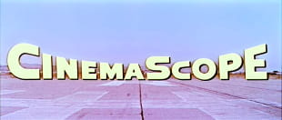

Cinema: a once universal art form
Cinema, considered the seventh art, played a central role in 20th century culture, reflecting the aspirations and societal issues of its time. Although it was a powerful cultural and economic vector, it was gradually supplanted by other forms of entertainment.

Cinema, once considered the seventh art, occupies a prominent place in our modern 20th-century culture. A true mirror of the society of its time, it reflected collective aspirations, fears and dreams. This form of artistic expression combined image, sound and movement to create captivating universes that transported spectators.
Over the decades, cinema has established itself as a powerful cultural vector and soft power tool for nations. It conveyed values and ideologies and helped to spread popular culture on a global scale. The film industry, long dominated by Hollywood, saw the emergence of new powers that which helped to diversify the range of films on offer and enrich the global cinematographic landscape.


Solaris
by A. Tarkovski and2001
by S. Kubrick were used by the East and West as soft power tools during the Cold War, illustrating Russian and American cinematographic know-how.The evolution of technology has considerably changed the way we consume films. From the big screen to streaming platforms, tablets and smartphones, cinema has tried to adapt to the times. However, the advent of artificial intelligence (AI)² marked the beginning of the end for this century-old art form.
AI rapidly revolutionised every aspect of film production. From automatically generated scripts, to virtual actors indistinguishable from humans, to fully automated editing and special effects, AI gradually supplanted human creators. Although technically perfect, these AI-generated productions began to lose flavour and originality. The films gradually became bland, lacking that unique spark that only human creativity could provide.
Auteur cinema, particularly prized in France, tried to resist this wave of automation and standardisation, but ultimately succumbed to the technical perfection of AI-generated works. The diversity of styles and narratives was paradoxically reduced by algorithms seeking to maximise audience engagement, resulting in increasingly formatted and predictable productions.
In conclusion, cinema was an art form that fascinated audiences for over a century, reflecting the issues of its time and pushing back the limits of human creativity. However, with the omnipresence of AI, it gradually lost its ability to move and surprise. Films, though visually impressive, became increasingly insipid, lacking the depth and complexity that had made cinema great. What was once a pillar of our contemporary culture was transformed into standardised, soulless entertainment, marking the end of a rich and vibrant artistic era.
Major changes in the seventh art
The transformation of filmmaking techniques with the arrival of the CinemaScope⁵ format
The emergence of synchronised sound
The revolutionary impact of the Louma crane on film-making techniques
The arrival of the Steadicam⁶
The arrival of 3D
The emergence of virtual reality as an art form
The popularisation of artificial intelligence with the arrival of GPT Chat